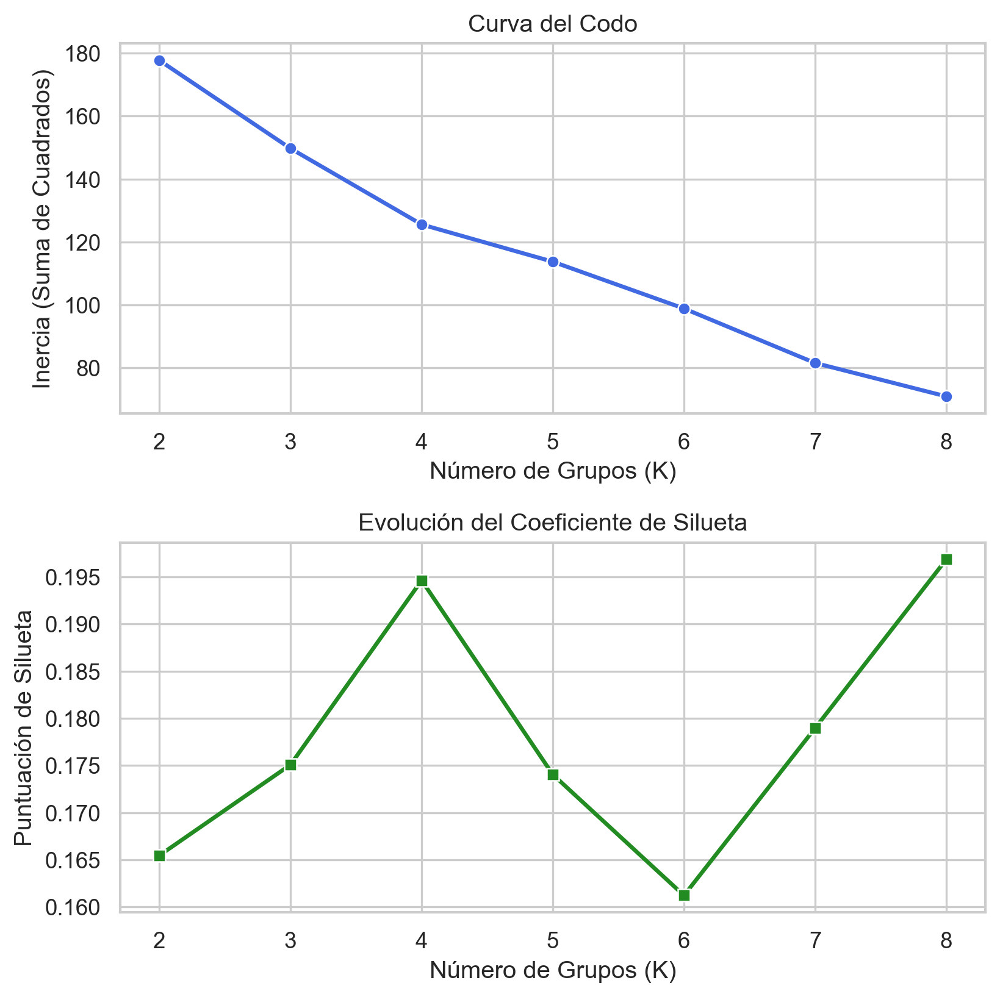
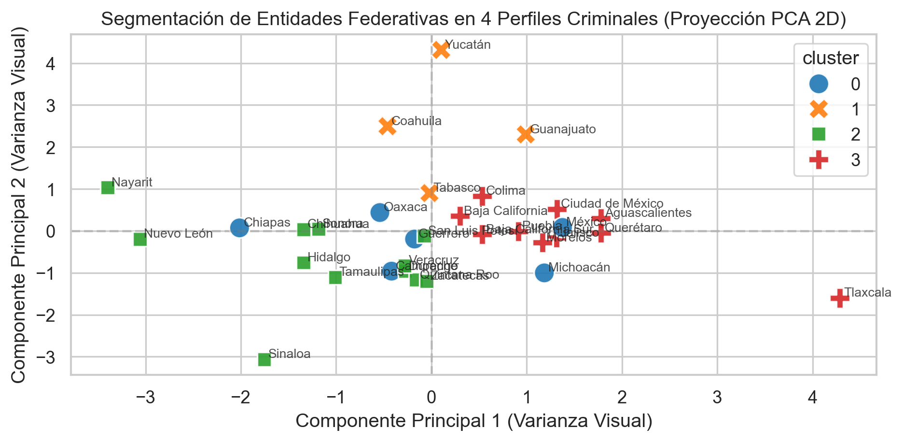

El objetivo de este módulo es identificar segmentos, perfiles y patrones latentes en la incidencia delictiva de las 32 entidades federativas de México mediante técnicas de agrupamiento no supervisado utilizando el algoritmo K-Means.
A diferencia de un análisis basado en el volumen total de delitos, el cual puede verse influenciado por factores como el tamaño poblacional o la concentración urbana de cada entidad, este estudio se centra en la proporción de participación de los siete Bienes Jurídicos Afectados registrados en cada estado. De esta forma, el análisis busca caracterizar la composición relativa de la actividad delictiva en cada entidad, independientemente de su magnitud absoluta.
Bajo este enfoque, la pregunta principal que guía el análisis es:
¿Qué tipo de delincuencia predomina en cada entidad federativa y qué estados comparten perfiles delictivos similares?
¿Por qué se decidio usar K-Means?
Se seleccionó K-Means como algoritmo de agrupamiento debido a que las variables utilizadas corresponden a proporciones normalizadas de incidencia delictiva, generando un espacio de características continuo en el que la distancia euclidiana constituye una medida adecuada de similitud.
Adicionalmente, el análisis se realiza sobre un conjunto reducido de observaciones (32 entidades federativas), situación en la que los métodos basados en densidad pueden presentar una alta sensibilidad a la configuración de parámetros y producir agrupamientos poco estables.
Finalmente, K-Means genera centroides explícitos para cada grupo, lo que permite caracterizar e interpretar los perfiles criminológicos resultantes mediante el comportamiento promedio de los bienes jurídicos afectados en cada cluster.
Preparación de los Datos y Construcción de la Matriz de Proporciones
Con el fin de identificar patrones en la composición de la incidencia delictiva y evitar que los agrupamientos estuvieran determinados principalmente por el tamaño poblacional o el volumen total de delitos de cada entidad, se implementaron las siguientes transformaciones mediante la clase CrimeClusteringPipeline:
Agrupación por Bien Jurídico: Los distintos tipos y subtipos de delitos se agruparon en las siete categorías de Bien Jurídico Afectado definidas en el conjunto de datos. Esto permitió reducir la dimensionalidad y obtener una representación más interpretable del fenómeno delictivo.
Normalización por Fila (Proporciones): Para cada entidad federativa se calculó la proporción que representa cada bien jurídico respecto al total de delitos registrados en dicha entidad. Se usó la siguiente fórmula: pi = \frac{Delitos_i}{\sum_j Delitos_j}
De esta manera, cada estado quedó representado por un vector de siete proporciones cuya suma es igual a uno, permitiendo comparar la estructura relativa de la incidencia delictiva independientemente de su magnitud absoluta.
Estandarización (StandardScaler): Aunque todas las variables fueron previamente transformadas a proporciones, los distintos bienes jurídicos presentan niveles de variabilidad diferentes entre entidades federativas. La estandarización permite que cada dimensión contribuya de forma equilibrada al cálculo de las distancias euclidianas utilizadas por K-Means, evitando que las categorías con mayor dispersión dominen el proceso de agrupamiento.
Mostrar código
import sysfrom pathlib import Path# Resuelve el problema de las ubicaciones de los scriptssys.path.insert(0, str(Path.cwd().parent))import pandas as pdimport matplotlib.pyplot as pltimport seaborn as snsfrom src import configfrom src.data import DataRepositoryfrom src.clustering import CrimeClusteringPipeline# Tema visual por defecto del proyecto.sns.set_theme(style=config.SEABORN_THEME, palette=config.PLOT_PALETTE)# Cargar el dataset limpiorepo = DataRepository(config.PROCESSED_CSV)dataframe = repo.load()# Inicializar el pipeline de agrupamientoclustering_pipe = CrimeClusteringPipeline()# Transformar los datos y generar la matriz estandarizadamatrix_pct = clustering_pipe.fit_transform(dataframe)
[Clustering] Matriz macro preparada con 32 estados y 7 variables (Bienes Jurídicos).
[Clustering] El plano visual (PCA 2D) captura el 55.32% de la varianza total de estas categorías.
Consideración sobre la Dimensionalidad y Visualización
Con el propósito de visualizar los resultados del agrupamiento, se empleó un modelo de Análisis de Componentes Principales (PCA) configurado con dos componentes principales.
Es importante destacar que el algoritmo K-Means fue entrenado utilizando las siete variables originales estandarizadas, conservando así la totalidad de la información disponible para el proceso de agrupamiento. El PCA se utilizó únicamente como una técnica de reducción de dimensionalidad para representar gráficamente los resultados en un plano bidimensional.
La proyección obtenida mediante las dos primeras componentes principales explica el 55.32% de la varianza total de los datos. Si bien esta representación no captura la totalidad de la estructura presente en el espacio original de siete dimensiones, proporciona una aproximación visual adecuada de los patrones principales y permite interpretar de forma intuitiva la separación entre los grupos identificados por K-Means. La información restante permanece contenida en las dimensiones no representadas gráficamente, pero sí fue considerada durante el proceso de agrupamiento.
Selección del Número Óptimo de Clusters
Para determinar la estructura de agrupamiento más adecuada de las entidades federativas, se evaluaron simultáneamente el Método del Codo (Inercia) y la evolución del Coeficiente de Silueta en un rango de entre 2 y 8 clústers.
Mostrar código
# Calcular las métricas de Inercia y Silueta para rangos de K del 2 al 8metrics = clustering_pipe.evaluate_k_options(max_k=8)# Configurar el lienzo para mostrar ambas gráficas una al lado de la otrafig, axes = plt.subplots(2, 1, figsize=(7, 7), dpi=config.PLOT_DPI)# Gráfica izquierda: Método del Codo (Inercia)sns.lineplot(x=metrics["k"], y=metrics["inertia"], marker="o", ax=axes[0], color="royalblue", linewidth=2)axes[0].set_title("Curva del Codo")axes[0].set_xlabel("Número de Grupos (K)")axes[0].set_ylabel("Inercia (Suma de Cuadrados)")axes[0].grid(True)# Gráfica derecha: Evolución de la Silueta (Silhouette Score)sns.lineplot(x=metrics["k"], y=metrics["silhouette"], marker="s", ax=axes[1], color="forestgreen", linewidth=2)axes[1].set_title("Evolución del Coeficiente de Silueta")axes[1].set_xlabel("Número de Grupos (K)")axes[1].set_ylabel("Puntuación de Silueta")axes[1].grid(True)plt.tight_layout()plt.show()

Selección del número de clusters a usar
Analicemos estos resultados:
Coeficiente de Silueta: Podemos observar un máximo local claramente definido en K=4, indicando una buena combinación entre cohesión y separación de los grupos. Aunque el valor máximo absoluto se alcanza en K=8, la mejora respecto al valor anterior es poco significativa como para usar este valor en lugar del anterior.
Método del Codo (Inercia): La curva de inercia presenta una desaceleración apreciable en su tasa de disminución alrededor de K=4, sugiriendo que incrementos posteriores en el número de clusters producen beneficios progresivamente menores.
Con base en ambos criterios seleccionamos K=4 como la configuración final del modelo. Esta elección proporciona un equilibrio adecuado entre calidad estadística e interpretabilidad, permitiendo identificar perfiles delictivos diferenciados sin fragmentar excesivamente el conjunto de 32 entidades federativas analizadas.
Resultados de la Matriz de Proporciones y Perfil de Clusters
Una vez entrenado el modelo con K=4, se obtuvo la matriz de proporciones promedio para cada cluster, lo que permitió caracterizar los perfiles delictivos predominantes en cada grupo de entidades federativas.
Mostrar código
N_CLUSTERS_OPTIMO =4# Entrenar el modelo final en 7D y recuperar coordenadas PCA para graficardf_clusters = clustering_pipe.fit_final_model(n_clusters=N_CLUSTERS_OPTIMO)matrix_pct = clustering_pipe.prepare_matrix(dataframe)# Pegamos la columna del cluster que calculó el modelomatrix_pct['cluster'] = df_clusters.set_index('entidad')['cluster']# Calculamos el promedio de cada delito para cada uno de los 4 gruposresumen_clusters = matrix_pct.groupby('cluster').mean()# Multiplicamos por 100 para visualizarlo como porcentaje limpio y transponemos para leerlo mejorresumen_porcentual = (resumen_clusters *100).round(2).Tresumen_porcentual
cluster
0
1
2
3
bien_juridico_afectado
El patrimonio
44.02
37.44
42.74
55.04
La familia
10.57
14.54
19.93
11.17
La libertad y la seguridad sexual
3.86
2.22
3.77
2.83
La sociedad
0.57
0.53
0.26
0.43
La vida y la Integridad corporal
18.74
11.61
13.47
11.08
Libertad personal
1.05
0.37
1.93
0.69
Otros bienes jurídicos afectados (del fuero común)
21.19
33.29
17.89
18.76
Interpretacion de los Clusters
#0 – Perfil de Violencia contra las Personas
Este grupo se caracteriza por presentar la mayor participación relativa de delitos relacionados con la vida y la integridad corporal (18.74%), así como el valor más elevado en libertad y seguridad sexual (3.86%). En comparación con los demás grupos, la incidencia asociada a conductas violentas tiene un peso relativo mayor dentro de la composición delictiva total. Entre las entidades pertenecientes a este grupo se encuentran Campeche, Chiapas, Guerrero, Michoacán, Estado de México y Oaxaca.
#1 – Perfil Diversificado de Otros Bienes Jurídicos
La característica más distintiva de este grupo es la elevada participación de la categoría Otros bienes jurídicos afectados (33.29%), valor considerablemente superior al observado en los demás clústeres. Esto indica una distribución delictiva menos concentrada en categorías tradicionales como patrimonio o familia y una mayor presencia relativa de delitos clasificados en rubros complementarios del conjunto de datos. Este perfil está conformado por Coahuila, Guanajuato, Tabasco y Yucatán.
#2 – Perfil Familiar y de Libertad Personal
Este clúster presenta la mayor proporción de delitos contra la familia (19.93%) y contra la libertad personal (1.93%), superando al resto de los grupos en ambas categorías. El resultado sugiere una mayor concentración relativa de problemáticas asociadas al entorno familiar y a conductas que afectan la libertad individual. Las entidades agrupadas bajo este perfil son Chihuahua, Durango, Hidalgo, Nayarit, Nuevo León, Quintana Roo, San Luis Potosí, Sinaloa, Sonora, Tamaulipas, Veracruz y Zacatecas.
#3 – Perfil Patrimonial
Este grupo concentra la mayor participación de delitos contra el patrimonio (55.04%), representando más de la mitad de la incidencia promedio del clúster. La composición observada refleja una predominancia de delitos patrimoniales, como robos, fraudes y conductas relacionadas con afectaciones económicas. Entre las entidades pertenecientes a este perfil se encuentran Aguascalientes, Baja California, Baja California Sur, Ciudad de México, Colima, Jalisco, Morelos, Puebla, Querétaro y Tlaxcala.
A nivel general, la proyección bidimensional permite apreciar que los cuatro grupos identificados por K-Means muestran patrones diferenciados dentro del espacio de características, proporcionando una representación visual coherente con la estructura de agrupamiento obtenida por el modelo.
Mostrar código
# Construir la visualización del Scatter Plotplt.figure(figsize=(8, 4), dpi=config.PLOT_DPI)sns.scatterplot( data=df_clusters, x="pca_1", y="pca_2", hue="cluster", palette="tab10", s=160, style="cluster", alpha=0.9)# Etiquetar cada punto con el nombre de su respectivo estadofor i inrange(len(df_clusters)): plt.text( x=df_clusters["pca_1"][i] +0.04, y=df_clusters["pca_2"][i] +0.04, s=df_clusters["entidad"][i], fontsize=8, alpha=0.8 )plt.title(f"Segmentación de Entidades Federativas en {N_CLUSTERS_OPTIMO} Perfiles Criminales (Proyección PCA 2D)")plt.xlabel("Componente Principal 1 (Varianza Visual)")plt.ylabel("Componente Principal 2 (Varianza Visual)")# Líneas de referencia en el origenplt.axhline(0, color="grey", linestyle="--", alpha=0.3)plt.axvline(0, color="grey", linestyle="--", alpha=0.3)plt.tight_layout()plt.show()

Visualización de la Segmentación de Entidades Federativas en 4 Perfiles Criminales (Proyección PCA 2D)
Para comprender la geometría de las entidades federativas en la proyección PCA, analizamos la matriz de cargas (loadings), la cual indica la contribución y correlación lineal de cada Bien Jurídico Afectado con las dos primeras componentes principales (ejes del plano).
Bien Jurídico Afectado
Componente Principal 1 (PC1)
Componente Principal 2 (PC2)
El patrimonio
0.567
-0.332
La familia
-0.564
0.030
La libertad y la seguridad sexual
-0.459
-0.137
La sociedad
-0.047
0.322
La vida y la integridad corporal
-0.095
-0.325
Libertad personal
-0.368
-0.450
Otros bienes jurídicos afectados
-0.058
0.677
Mostrar código
# Extraer la matriz de loadings (componentes_ x variables)loadings = clustering_pipe.pca.components_# Construir un DataFrame elegante para analizar la composicióndf_loadings = pd.DataFrame( loadings.T, # Transponemos para que las variables queden en las filas columns=["Componente Principal 1 (PC1)", "Componente Principal 2 (PC2)"], index=clustering_pipe.features_names)df_loadings.round(3)
Componente Principal 1 (PC1)
Componente Principal 2 (PC2)
El patrimonio
0.567
-0.332
La familia
-0.564
0.030
La libertad y la seguridad sexual
-0.459
-0.137
La sociedad
-0.047
0.322
La vida y la Integridad corporal
-0.095
-0.325
Libertad personal
-0.368
-0.450
Otros bienes jurídicos afectados (del fuero común)
-0.058
0.677
Los coeficientes muestran que la Componente Principal 1 (PC1) está dominada por un contraste entre El patrimonio (carga positiva alta) y variables asociadas al entorno familiar y social, como La familia y _La libertad y la seguridad sexual (cargas negativas). En consecuencia, las entidades ubicadas hacia la derecha del plano tienden a presentar una mayor proporción relativa de delitos patrimoniales, mientras que las ubicadas hacia la izquierda muestran una mayor participación relativa de las categorías familiares y sociales.
Por su parte, la Componente Principal 2 (PC2) está fuertemente influenciada por Otros bienes jurídicos afectados (0.677). Esto explica por qué las entidades del Cluster 1 como Yucatán, Coahuila, Guanajuato y Tabasco, aparecen desplazadas hacia la parte superior de la gráfica, pues comparten una participación relativamente elevada de esa categoría respecto al resto del país.
La matriz de cargas también ayuda a interpretar el caso de Tlaxcala, que aparece aislado en la parte inferior derecha. Su ubicación sugiere una combinación de proporciones delictivas distinta a la observada en la mayoría de las entidades de su mismo clúster, aun cuando mantiene una fuerte orientación patrimonial.
La proximidad o aparente solapamiento de algunos puntos pertenecientes a distintos grupos dentro de la proyección bidimensional es un comportamiento esperado ya que la representación mediante PCA conserva únicamente el 55.32% de la varianza total de los datos, dejando fuera aproximadamente el 44.68% de la información contenida en las dimensiones restantes.
Perfiles bajo la Proyección PCA
#1 - Perfil Diversificado
Este grupo, conformado por Yucatán, Coahuila, Guanajuato y Tabasco, es el más claramente distinguible dentro de la proyección PCA, desplazándose hacia la región superior del plano. Esta separación visual resulta consistente con el análisis de los perfiles promedio, ya que corresponde al clúster con la mayor participación de la categoría Otros bienes jurídicos afectados, característica que lo diferencia del resto de las entidades federativas.
#0 y #2 - Perfiles de Violencia y Entorno Familiar
Ambos grupos ocupan principalmente la región central de la proyección y presentan algunos estados relativamente próximos entre sí. Esta situación sugiere que comparten ciertas características en las dos primeras componentes principales. No obstante, dicha cercanía la debemos interpretar con cuidado ya que la agrupación definitiva fue realizada en el espacio original de siete dimensiones, donde existen diferencias suficientes para que K-Means los clasifique en perfiles distintos.
#3 - Perfil Patrimonial
Este grupo exhibe un núcleo relativamente compacto en la región derecha del plano, donde se concentran entidades como Ciudad de México, Aguascalientes, Querétaro y Jalisco. La cohesión observada resulta consistente con su perfil predominantemente patrimonial, caracterizado por una elevada participación de delitos contra el patrimonio. Adicionalmente, destaca el caso de Tlaxcala, que aparece visualmente separado del núcleo principal del grupo. Aunque comparte la misma clasificación patrimonial, su ubicación sugiere una combinación de proporciones delictivas distinta a la observada en el resto de las entidades del clúster.
Podemos notar que algunos puntos pertenecientes a distintos grupos aparecen próximos entre sí dentro de la proyección bidimensional. Este comportamiento es esperado, ya que la representación mediante PCA conserva únicamente el 55.32% de la varianza total de los datos, dejando fuera aproximadamente el 44.68% de la información contenida en las dimensiones restantes.